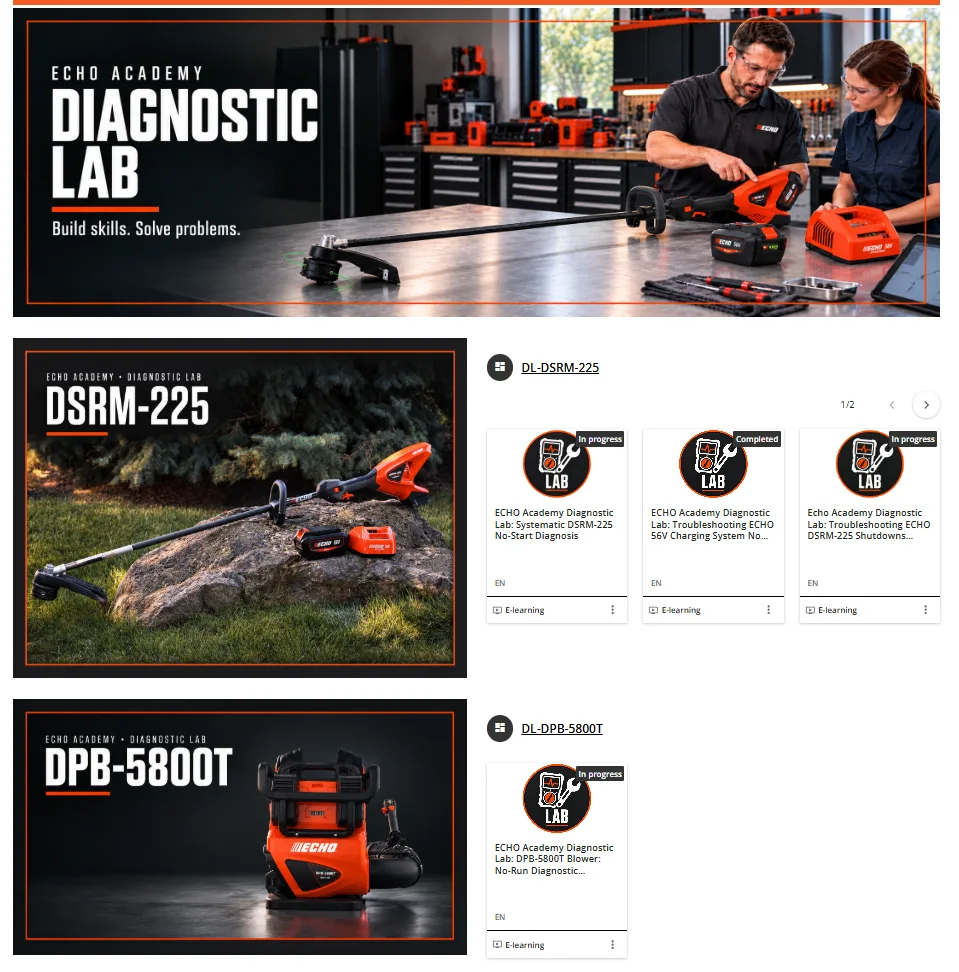
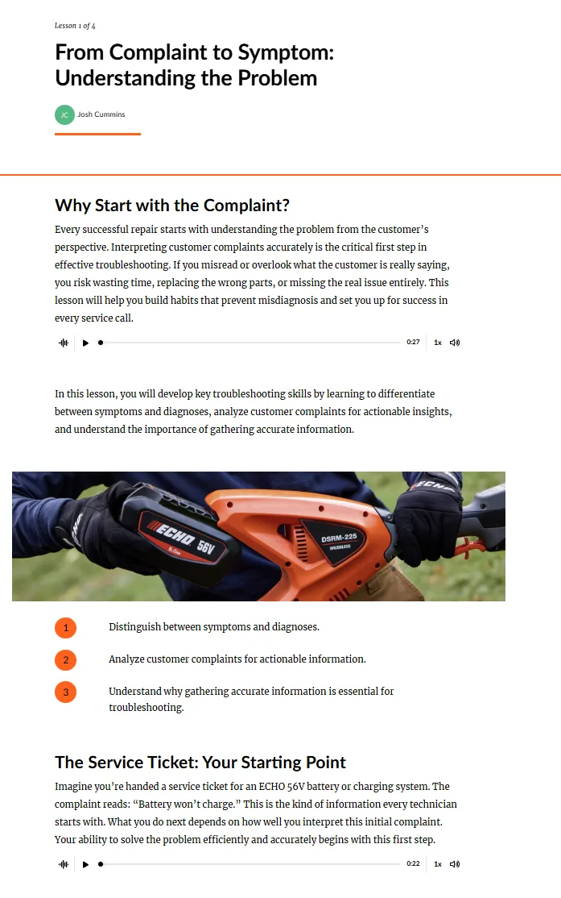

Diagnostic Lab
A product-specific troubleshooting experience designed to teach technicians how to reason from customer complaint to symptom to diagnosis.

The design premise
Technical training can easily become a catalog of facts and procedures. Diagnostic work is different: technicians need to interpret incomplete information, distinguish symptoms from diagnoses, gather evidence and decide what to test next.
Instructional pattern
1. Start with the complaint
The learner begins where a real service interaction begins—with the customer’s description of the problem.
2. Separate symptom from diagnosis
The course explicitly teaches that “battery won’t charge” is a complaint, not a diagnosis. That distinction creates the reasoning space needed for effective troubleshooting.
3. Build product-specific context
Lessons use ECHO product photography, service scenarios, technical visuals, audio and structured objectives so diagnostic reasoning stays connected to actual equipment.

What this demonstrates
Technical instructional design, scenario writing, learning architecture, branded learner experience, multimedia integration, product-context training and collaboration with technical SMEs.
Download full case studyPortfolio note: screenshots and metrics are presented as dated examples of work and system scale. Public versions intentionally omit learner-list PII. Company trademarks and platform interfaces remain the property of their respective owners.
See how the pieces connect.
Explore the broader portfolio or use the career brief for a concise view of experience and role fit.